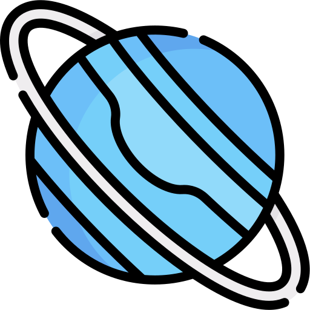

SISTEMA SOLAR

O sistema solar é composto por uma estrela, o Sol, e todos os objetos celestes que orbitam ao seu redor. O Sol é uma estrela do tipo G2V, que fica no centro do sistema solar, e é responsável por fornecer luz e calor para todos os planetas e outros corpos celestes que compõem o sistema. Os oito planetas do sistema solar, em ordem de distância do Sol, são: Mercúrio, Vênus, Terra, Marte, Júpiter, Saturno, Urano e Netuno. Além dos planetas, existem também planetas anões, como Plutão, e muitos outros corpos celestes menores, como asteroides e cometas. Cada planeta tem suas próprias características únicas, como tamanho, atmosfera, temperatura, número de luas e composição química. Por exemplo, Mercúrio é o planeta mais próximo do Sol e tem uma superfície cheia de crateras de impacto, enquanto Júpiter é o maior planeta do sistema solar e tem uma atmosfera turbulenta cheia de tempestades, incluindo a famosa Grande Mancha Vermelha. Os planetas orbitam o Sol em órbitas elípticas, com diferentes períodos orbitais. A Terra leva cerca de 365 dias para orbitar o Sol, enquanto Júpiter leva cerca de 12 anos. Além dos planetas, o sistema solar é composto por uma grande quantidade de asteroides, que orbitam principalmente entre Marte e Júpiter, e cometas, que podem ter órbitas muito excêntricas que os levam até as regiões mais distantes do sistema solar. O estudo do sistema solar é importante para entender a história e a evolução do nosso próprio planeta, bem como para investigar a possibilidade de vida em outros planetas e luas dentro do nosso sistema solar e além.
O Sol é uma estrela de tamanho médio que se encontra no centro do Sistema Solar. É a estrela mais próxima da Terra e fornece a energia que sustenta toda a vida em nosso planeta. O Sol é composto principalmente de hidrogênio e hélio, e é mantido em equilíbrio pela combinação de duas forças opostas: a gravidade, que puxa a massa do Sol para o centro, e a pressão, que empurra a massa para fora. O Sol tem uma temperatura de cerca de 5.500 graus Celsius na sua superfície, e a temperatura em seu núcleo é de cerca de 15 milhões de graus Celsius. O Sol emite luz e calor através da fusão nuclear, um processo em que átomos de hidrogênio se combinam para formar átomos de hélio, liberando uma grande quantidade de energia. O Sol tem um diâmetro de cerca de 1,4 milhão de quilômetros, o que é cerca de 109 vezes o diâmetro da Terra, e leva cerca de 25 dias para completar uma rotação em torno de seu próprio eixo. Além disso, o Sol leva cerca de 225 a 250 milhões de anos para completar uma órbita em torno do centro da Via Láctea. O Sol é a fonte primária de energia para todo o Sistema Solar, e suas erupções solares e vento solar têm um impacto significativo na magnetosfera da Terra e nos sistemas de comunicação e energia da Terra. O Sol também é um objeto fascinante para estudo científico, e muitas missões foram enviadas para estudar sua estrutura, dinâmica e impacto no espaço e no clima da Terra. Em resumo, o Sol é uma estrela de tamanho médio que fornece a energia para sustentar toda a vida na Terra, e é um objeto fascinante para estudo científico.

Mercúrio é o planeta mais próximo do Sol e o menor planeta do sistema solar, com um diâmetro de cerca de 4.880 quilômetros. Ele orbita em torno do Sol a uma distância média de aproximadamente 58 milhões de quilômetros e completa uma órbita completa em torno do Sol a cada 88 dias terrestres. Devido à sua proximidade com o Sol, a temperatura na superfície de Mercúrio pode atingir até 427°C durante o dia e cair para -173°C durante a noite. Isso faz de Mercúrio o planeta mais quente e mais frio do sistema solar. A superfície de Mercúrio é marcada por enormes crateras de impacto, cadeias de montanhas e falhas tectônicas. A superfície do planeta é coberta por uma fina camada de poeira e pequenos fragmentos rochosos, e não há atmosfera significativa. A falta de uma atmosfera significa que o planeta não tem proteção contra a radiação solar e cósmica, tornando a superfície de Mercúrio um lugar extremamente hostil. Apesar de sua proximidade com o Sol, a missão MESSENGER da NASA, que estudou Mercúrio entre 2011 e 2015, descobriu que o planeta abriga água congelada em crateras permanentemente sombreadas perto dos polos. Essa descoberta foi uma surpresa, já que as temperaturas na superfície de Mercúrio são tão extremas. Devido às suas características únicas e proximidade com o Sol, Mercúrio continua sendo um objeto fascinante de estudo para cientistas planetários.

Vênus é o segundo planeta do Sistema Solar em ordem de distância do Sol, localizado entre Mercúrio e a Terra. É um planeta rochoso, com um diâmetro de cerca de 12.104 quilômetros, ligeiramente menor que a Terra. Vênus é frequentemente chamado de planeta irmão da Terra, devido ao fato de serem similares em tamanho, massa e composição. No entanto, as semelhanças param por aí. Vênus é um dos planetas mais inóspitos do sistema solar, com uma superfície infernalmente quente, com temperaturas que chegam a 460 graus Celsius, e uma atmosfera densa, tóxica e rica em dióxido de carbono. A densa atmosfera de Vênus é composta principalmente de dióxido de carbono, com nuvens de ácido sulfúrico. Essa atmosfera espessa faz com que o planeta seja o mais brilhante no céu noturno, depois da Lua, e é frequentemente visto como a "Estrela da Manhã" ou a "Estrela da Tarde". Vênus tem uma rotação muito lenta, levando 243 dias terrestres para completar uma rotação em torno do próprio eixo. Além disso, a rotação de Vênus é retrógrada, o que significa que o planeta gira na direção oposta à maioria dos outros planetas. O período orbital de Vênus ao redor do Sol é de cerca de 225 dias terrestres. Apesar das condições extremas na superfície, Vênus é um alvo importante para a exploração planetária. Várias missões espaciais, incluindo a recente missão da Agência Espacial Europeia chamada Venus Express, estudaram a atmosfera e a superfície de Vênus para tentar entender melhor a geologia e o clima do planeta.
A Terra é o terceiro planeta do Sistema Solar, localizado a uma distância média de cerca de 150 milhões de quilômetros do Sol. É um planeta rochoso, com um diâmetro de aproximadamente 12.742 quilômetros, e é o único planeta conhecido a abrigar vida em sua superfície. A Terra é um planeta único em muitos aspectos. Ele possui uma atmosfera que é composta principalmente de nitrogênio e oxigênio, o que permite que a vida prospere em sua superfície. A água é abundante na Terra, e é um dos principais componentes que sustentam a vida. A Terra é o quinto maior planeta do Sistema Solar em massa, com uma gravidade que é cerca de 2,5 vezes maior que a de Marte. Sua rotação em torno do próprio eixo leva cerca de 24 horas, o que é o que define o dia e a noite na Terra. Além disso, a Terra leva cerca de 365 dias para completar uma órbita completa em torno do Sol, o que define o ano terrestre. A superfície da Terra é marcada por enormes cadeias de montanhas, vastos oceanos, extensos desertos, florestas tropicais e muito mais. A geologia da Terra é complexa e diversa, com vários tipos diferentes de rochas, vulcões, terremotos e atividade tectônica. A Terra é o lar de milhões de espécies de vida, incluindo seres humanos. A biosfera da Terra é uma rede complexa de ecossistemas interconectados que abrigam vida em uma ampla gama de condições, desde os ambientes mais extremos até os mais delicados. A exploração da Terra continua a ser um desafio constante para cientistas e pesquisadores. A compreensão da Terra e suas complexidades é fundamental para o desenvolvimento da ciência e tecnologia, bem como para o bem-estar humano e a sustentabilidade do planeta.

Marte é o quarto planeta do Sistema Solar, localizado após a Terra em relação ao Sol. É um planeta rochoso, com um diâmetro de cerca de 6.779 quilômetros, aproximadamente metade do tamanho da Terra. Marte é frequentemente chamado de "Planeta Vermelho", devido à cor avermelhada de sua superfície. Marte é um dos planetas mais estudados e explorados do Sistema Solar, com várias missões espaciais enviadas por várias agências espaciais, incluindo a NASA, a Agência Espacial Europeia e a Agência Espacial Russa. As missões espaciais de Marte têm como objetivo entender melhor a geologia, a atmosfera e a possibilidade de vida no planeta. Marte tem uma atmosfera muito fina, composta principalmente de dióxido de carbono. Sua superfície é marcada por enormes vulcões, grandes desfiladeiros e uma grande quantidade de crateras de impacto. A superfície do planeta é muito fria, com temperaturas que variam de -140 graus Celsius à noite até um máximo de cerca de 20 graus Celsius durante o dia. Há evidências de que a água existiu em Marte no passado, e algumas evidências sugerem que ainda pode haver água líquida abaixo da superfície. A presença de água é um ingrediente essencial para a vida como a conhecemos, o que faz de Marte um alvo importante para a busca de vida extraterrestre. Marte é também o lar de dois dos maiores vulcões do Sistema Solar, Olympus Mons e Elysium Mons. Olympus Mons é o maior vulcão conhecido em todo o Sistema Solar, com uma altura de mais de 21 quilômetros, o que o torna três vezes mais alto que o Monte Everest na Terra. A exploração de Marte continua a ser um objetivo importante para a pesquisa espacial. Várias missões futuras estão planejadas, incluindo a missão Mars Sample Return, que tem como objetivo trazer amostras de rocha marciana de volta à Terra para análise detalhada.

Júpiter é o quinto planeta do Sistema Solar, sendo o maior planeta em diâmetro, massa e volume. É um planeta gasoso, com uma atmosfera composta principalmente de hidrogênio e hélio, e é conhecido por suas manchas coloridas, que são tempestades violentas e gigantes que ocorrem em sua atmosfera. Com um diâmetro de cerca de 142.984 quilômetros, Júpiter é mais de duas vezes maior que todos os outros planetas do Sistema Solar juntos. Sua grande massa faz com que ele tenha uma gravidade muito forte, cerca de 2,5 vezes mais forte que a da Terra. Júpiter tem um período de rotação muito curto, de cerca de 10 horas, o que significa que um dia em Júpiter é muito mais curto que um dia na Terra. Além disso, Júpiter leva cerca de 12 anos terrestres para completar uma órbita completa em torno do Sol. A atmosfera de Júpiter é muito dinâmica, com tempestades poderosas, como a Grande Mancha Vermelha, que é uma tempestade que já dura há mais de 300 anos. Júpiter também tem muitas luas, com um total de 79 satélites naturais conhecidos até o momento, incluindo as quatro maiores: Io, Europa, Ganimedes e Calisto. Júpiter é um dos planetas mais estudados pelos cientistas, com várias missões espaciais enviadas para estudar suas luas, atmosfera e magnetosfera. A sonda Juno, da NASA, é a mais recente missão em curso, tendo chegado em órbita de Júpiter em 2016, com o objetivo de estudar a atmosfera e a estrutura interna do planeta. Júpiter é um planeta fascinante e importante para a exploração espacial, e os cientistas continuam a aprender mais sobre ele à medida que exploram o Sistema Solar.

Saturno é o sexto planeta do Sistema Solar e é conhecido por seus magníficos anéis. É um planeta gasoso, com uma atmosfera composta principalmente de hidrogênio e hélio, e é o segundo maior planeta em diâmetro, com cerca de 120.536 quilômetros. Saturno tem um período de rotação muito curto, de cerca de 10 horas e 39 minutos, o que significa que um dia em Saturno é relativamente curto em comparação com a Terra. Ele leva cerca de 29,5 anos terrestres para completar uma órbita completa em torno do Sol, o que significa que seu ano é muito mais longo do que o nosso. O que torna Saturno único e espetacular são seus anéis brilhantes e distintos, que foram descobertos pelo astrônomo italiano Galileo Galilei em 1610. Os anéis são compostos principalmente de gelo de água e partículas rochosas, e se estendem a uma distância de até 282.000 quilômetros a partir do centro do planeta. Os anéis são divididos em vários anéis principais, bem como anéis mais fracos e estreitos. Saturno também tem muitas luas, com um total de 82 satélites naturais conhecidos até o momento. A maior lua de Saturno, Titã, é uma das mais intrigantes, pois tem uma atmosfera densa composta principalmente de nitrogênio, metano e etano, e é a única lua no Sistema Solar com uma atmosfera significativa. A exploração de Saturno começou na década de 1970, com as missões Voyager da NASA, e desde então várias outras missões foram enviadas para estudar Saturno, seus anéis e suas luas. A sonda Cassini, uma colaboração da NASA, ESA e Agência Espacial Italiana, estudou Saturno e suas luas de 2004 até 2017, quando se desintegrou na atmosfera de Saturno, terminando sua missão em grande estilo. Saturno é um planeta fascinante e belo, com sua atmosfera colorida e seus magníficos anéis, e continua a intrigar e surpreender os cientistas e amantes da astronomia em todo o mundo.

Urano é o sétimo planeta do Sistema Solar, e é um dos quatro gigantes gasosos. É um planeta frio e distante, com uma atmosfera composta principalmente de hidrogênio, hélio e metano, que dá a Urano sua característica cor azul esverdeada. Urano é um planeta grande, com um diâmetro de cerca de 50.724 quilômetros, mas é significativamente menor do que Júpiter e Saturno. Ele tem um período de rotação muito lento, de cerca de 17 horas terrestres, e leva cerca de 84 anos terrestres para completar uma órbita completa em torno do Sol. Urano é conhecido por sua inclinação axial extremamente alta, que significa que ele gira em um eixo inclinado em um ângulo de cerca de 98 graus em relação à sua órbita. Isso faz com que as estações em Urano sejam extremas e diferentes das estações na Terra e em outros planetas. Durante uma parte da órbita, um dos polos de Urano fica voltado diretamente para o Sol, enquanto durante outra parte da órbita, o polo oposto fica voltado para o Sol. Urano tem um sistema de anéis e muitas luas, com um total de 27 satélites naturais conhecidos até o momento. Sua lua mais famosa é Miranda, que tem uma superfície muito variada, com penhascos, crateras e cânions. A exploração de Urano começou na década de 1980, com a missão Voyager 2 da NASA, que estudou Urano e suas luas em 1986. Desde então, não houve outras missões enviadas para estudar Urano, mas acredita-se que o planeta possa ter um núcleo sólido e uma dinâmica interna interessante. Urano é um planeta fascinante e único, com sua inclinação axial extrema e sua cor azul esverdeada distintiva. Continua a ser objeto de estudo e curiosidade para os cientistas e entusiastas da astronomia.
Netuno é o oitavo e mais distante planeta do Sistema Solar, e é também o quarto gigante gasoso. É um planeta frio e escuro, com uma atmosfera composta principalmente de hidrogênio, hélio e metano, que dá a Netuno sua característica cor azul esverdeada. Netuno é um planeta muito grande, com um diâmetro de cerca de 49.244 quilômetros, e é um pouco menor do que Urano. Ele tem um período de rotação muito rápido, de cerca de 16 horas terrestres, e leva cerca de 165 anos terrestres para completar uma órbita completa em torno do Sol. Netuno tem um sistema de anéis e muitas luas, com um total de 14 satélites naturais conhecidos até o momento. A maior lua de Netuno é Tritão, que é interessante porque é a única grande lua no Sistema Solar que orbita em direção contrária à rotação do planeta. A atmosfera de Netuno é conhecida por seus ventos extremamente fortes, que são os mais rápidos registrados no Sistema Solar, com velocidades que chegam a mais de 2.100 km/h. Além disso, Netuno é conhecido por suas tempestades gigantes, incluindo a Grande Mancha Escura, uma grande mancha que é semelhante à Grande Mancha Vermelha em Júpiter. A exploração de Netuno é limitada, com apenas uma missão até agora, a Voyager 2 da NASA, que voou pelo planeta em 1989 e coletou informações importantes sobre sua atmosfera, anéis e luas. No entanto, acredita-se que Netuno tenha um núcleo rochoso sólido e uma dinâmica interna interessante, o que o torna um alvo interessante para futuras missões de exploração. Netuno é um planeta fascinante e misterioso, com sua atmosfera escura e tempestuosa, suas luas intrigantes e sua distância extrema do Sol. Continua a ser objeto de estudo e curiosidade para os cientistas e amantes da astronomia em todo o mundo.